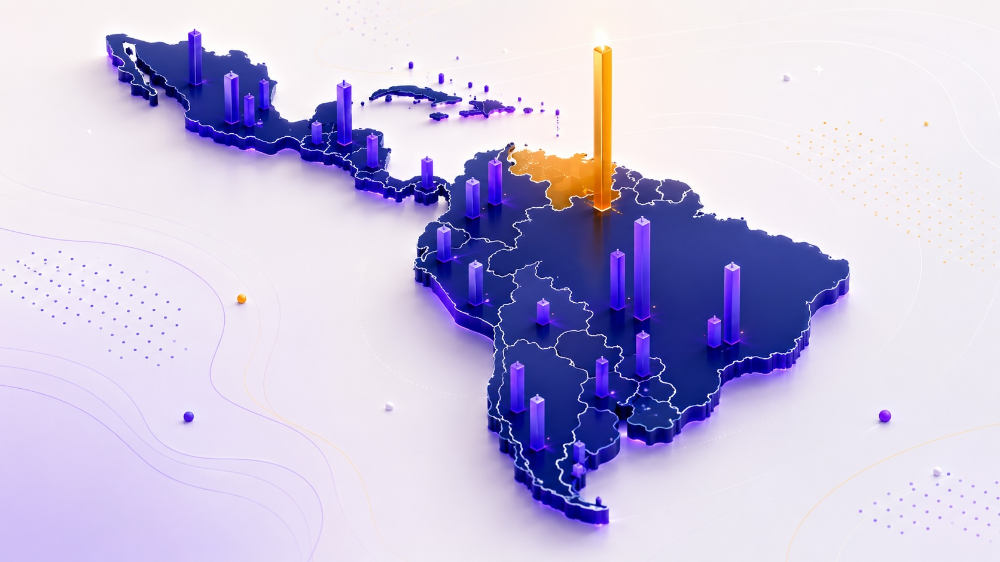

Liderazgo en IA y Datos
Head of AI · AI Strategy · Data & Analytics Lead
Perfil Ejecutivo de IA y Datos
AI & Data Strategy Leader · Adopción de GenAI · Transformación Analítica
Científico de datos senior y líder en estrategia de IA con 25+ años conectando datos, inteligencia artificial y decisiones de negocio. Diseño estrategias, productos analíticos, automatizaciones inteligentes y programas de adopción que convierten la complejidad técnica en capacidades reales de transformación.
Si solo tiene 30 segundos
Experiencia en organizaciones líderes
Convierto problemas complejos en soluciones comprensibles para stakeholders ejecutivos y técnicos.
Diseño roadmaps, MVPs, criterios de éxito, gobierno y adopción organizacional.
Aporto rigor metodológico, analítico y de medición a cada iniciativa.
Diseño soluciones conectadas con procesos reales, no solo conceptualizaciones.
Formo audiencias técnicas y no técnicas en IA, analítica y productividad.
Comunico insights con claridad, estructura e impacto ejecutivo.
No todos los procesos evalúan lo mismo. Esta vista no modifica mi experiencia ni genera un CV artificial: solo reorganiza casos, capacidades y evidencias para facilitar una revisión más rápida.
Dónde este perfil genera mayor valor
Head of AI · AI Strategy · Data & Analytics Lead
GenAI Lead · AI Adoption · Automation
Analytics Product · BI Lead · Decision Intelligence
AI & Data Advisor · Consultor de transformación
AI Educator · Corporate Trainer · AI Literacy
Filtre por tipo de iniciativa, o busque por tecnología, cliente o palabra clave. Haga clic en cualquier tarjeta para ver el caso completo: contexto, reto, rol, solución, stack y clasificación de evidencia.
Lidero proyectos estratégicos de analítica avanzada, machine learning e IA aplicada para organizaciones de distintas industrias, actuando como socio estratégico de áreas ejecutivas. Diseño e implemento soluciones end-to-end —desde la definición del problema hasta el despliegue productivo—, orquesto automatización basada en datos e IA, y asesoro en estrategia de datos, gobierno de IA y adopción organizacional.
Formación en IA aplicada para audiencias LATAM y programas académicos: diplomados de productividad, marketing, operaciones, ventas y negocios; IA generativa, Legal Tech, ética e investigación. NPS público institucional >85 (Asuntos Digitales); NPS 70/60 y 40/50 documentados en Collective Academy.
Co-lideré el diseño e implementación de soluciones de IA, GenAI y analítica avanzada para funciones corporativas globales (HR, Finance, Procurement y Legal), con foco en automatización, generación de insights, gobierno de datos y adopción responsable. Lideré y coordiné equipos analíticos y de consultoría (5–6 analistas y 3–4 consultores), articulando negocio, tecnología, datos y adopción en funciones corporativas globales y mercados LATAM. 14 Inspire Awards y 1 Encore Award.
Lideré capacidades de Business Intelligence, analítica predictiva y prescriptiva para Procurement Americas, automatizando análisis, integrando flujos de datos y habilitando decisiones con señales en tiempo real. Construí capacidades analíticas regionales desde cero y gestioné stakeholders en mercados LATAM. Contribución a un centro de excelencia en experiencia de usuario y NLP.
Lideré un equipo de más de 10–15 colaboradores dentro del Holding de Comunicaciones WPP (GroupM), construyendo la capacidad analítica regional y entregando análisis de negocio inteligente para clientes mediante las últimas herramientas de visualización de datos y plataformas avanzadas de BI. Énfasis especial en analítica digital para clientes de performance, definiendo lineamientos de trafficking y entregando analítica para la optimización de campañas y contenidos.
Dirigí la división de Analytics & Insight de esta agencia global de comunicación para América Latina, desde el HUB LatAm en Miami, atendiendo cuentas globales y regionales en sectores como electrónica de consumo, lujo y belleza, telecomunicaciones, ocio y turismo, entretenimiento y consumo masivo. Trabajé con los líderes regionales de A&I en la entrega de la oferta global de productos, adaptándola a las necesidades locales. Miembro del Global Analytics & Insight Board, representando los intereses de LATAM.
Lideré proyectos con clientes internacionales desde el hub global de Londres, consolidando experiencia consultiva y de gestión de datos. Creé herramientas de reporting innovadoras para clientes y para I+D global, con reconocimiento especial de clientes y compañías aliadas. Participación activa en el programa de inmersión digital y soporte a pitches de nuevo negocio a nivel global, con clientes de consumo masivo, telecomunicaciones, farmacéutico, finanzas, digital, lujo y entretenimiento.
Entregué analítica e insight como parte de las plataformas de comunicación de clientes en sectores como banca, tecnología, farmacéutico, consumo masivo, B2B, B2C, entretenimiento, retail, educación, salud, automotriz, gobierno y turismo. Asesoré soluciones de investigación y propuestas ad-hoc, con dominio de metodologías como brand equity, audiencias de medios, segmentación de consumidores y pruebas pre y post. Lideré eficiencias de procesos y formación interna en medios, y participé en pitches de nuevo negocio. Participación en comités gremiales (IBOPE, EGM, TGI, CICMA) y auditoría de estudios sindicados.
En el departamento de medios: análisis de costo y audiencia en TV, monitoreo de negociaciones y eficiencia de costo-valor; desarrollo de procesos de automatización para el análisis de negociaciones. Miembro del foro técnico y comité del estudio EGM de consumo de medios en Colombia, con soporte a credenciales y análisis de consumidores y audiencias para pitches de nuevo negocio.
Desliza para explorar →
Cada dominio agrupa skills, proyectos donde se aplican y palabras clave para procesos ATS.
Diseño capacidades de IA conectadas con el negocio: gobierno, roadmaps, priorización de casos de uso, criterios de éxito, modelos operativos y adopción.
Evidencia: Johnson & Johnson CBT · Connect Bogotá / Impulso IA 360 · Asuntos Digitales · Política corporativa de IA (Preflex).
IA generativa aplicada a procesos reales: RAG, agentes, lectura documental multimodal, narrativas automatizadas y prompt engineering.
Evidencia: Preflex (facturas con Gemini) · RAC Evolution (narrativas IA) · GenAI para Emprendedores · Asesor de Prompts.
Estadística aplicada, machine learning, modelos predictivos, series temporales, NLP y text analytics con rigor metodológico.
Evidencia: J&J Procurement (predictiva/prescriptiva) · Databricks BNA (PySpark, Pareto, desestacionalización) · RAC (modelo predictivo de compra).
Productos analíticos, dashboards ejecutivos, modelos semánticos, KPIs y visualización orientada a decisión.
Evidencia: RAC Evolution (12 módulos analíticos) · SEC / Asoanei (Power BI) · J&J BI.
Arquitecturas de datos modernas y despliegue de IA en producción sobre los tres principales ecosistemas cloud.
Evidencia: NEICON (arquitectura de datos) · Preflex (SAP B1, SIADOC, GCP) · Yubarta REP · Databricks.
Diagnóstico consultivo, diseño de propuestas, roadmaps por fases, gestión de stakeholders y creación de valor.
Evidencia: Impulso IA 360 · Preflex (roadmap producción) · Yubarta (12 semanas) · RAC Evolution.
Formación ejecutiva y corporativa, alfabetización en datos, adopción de IA y diseño pedagógico para audiencias diversas.
Evidencia: Asuntos Digitales (5 programas, NPS >85) · UMNG (2 diplomados) · Collective Academy (NPS 70/60) · Crehana.
Demuestro mi enfoque de visualización y experiencia de usuario con piezas reales que puedes abrir y explorar — claridad y usabilidad primero.

Colección de dashboards interactivos de analítica que narran historias y ayudan a convertirlas en decisiones — con IA conversacional y smart narrative.
Qué demuestra: convertir la analítica en narrativa y decisiones con IA conversacional, en vivo e interactivo.

Un tema, todo el flujo de datos: dataset abierto en Kaggle → notebook de análisis → dashboard en Tableau (el más visto) → un dashboard en JS dentro del storytelling completo en mi blog → un carrusel de hallazgos en LinkedIn.
Qué demuestra: el ciclo completo — conseguir datos abiertos, analizarlos, visualizarlos y contar la historia en varios canales.

Claude, ChatGPT y Gemini pronostican el Mundial 2026 y un consenso los combina — una experiencia interactiva, bilingüe y con modo oscuro, diseñada para la claridad.
Qué demuestra: convertir datos complejos en una historia clara, interactiva y centrada en el usuario.
Repositorios públicos y notebooks de ciencia de datos — open source como evidencia de cómo construyo, colaboro y comparto conocimiento.
Qué demuestra: código real y revisable, y una forma abierta de colaborar y enseñar.
Compendio interactivo de herramientas y plataformas de IA clasificadas por propósito, en actualización constante.
Abrir compendio →Johnson & Johnson — funciones globales, procurement, precisión y datos.
Preflex — Procure-to-Pay, planeación de demanda y producción.
GroupM / Wavemaker / MEC · Estudio RAC · agencias creativas.
CivisAI (Planeación Bogotá) · Ruta Top 5 Cundinamarca (IDC).
Yubarta / SEC — plataforma REP, trazabilidad ambiental.
Asuntos Digitales · UMNG · Collective Academy · Crehana.
Databricks BNA — análisis por industria, Pareto, series temporales.
UMNG — diplomados de IA generativa aplicada al Derecho: análisis documental, investigación jurídica, ética y automatización profesional.
Tesis de grado: Construcción del índice de precios de la Bolsa de Valores de Colombia mediante métodos de cointegración. Participación recurrente en el Simposio Internacional de Estadística de la Universidad Nacional (Estadística No Paramétrica, Control de Calidad, Investigación Social, Ciencia de Datos), 1997–2024.
Tipos de datos y métodos computacionales en salud estratificada y medicina de precisión: procesamiento de secuencias, análisis de imágenes, modelamiento de redes y probabilístico, machine learning, NLP, modelamiento de procesos y datos en grafos.
Primera generación de Científicos de Datos patrocinada con apoyo del Ministerio de Tecnologías de la Información y las Comunicaciones de Colombia. Formación intensiva en ciencia de datos aplicada, analítica, Python y resolución de problemas de negocio basados en datos.
University of Michigan — Programming for Everybody & Python Data Structures. Johns Hopkins University — Crash Course in Data Science, The Data Scientist's Toolbox, Getting and Cleaning Data, Building a Data Science Team, Managing Data Analysis.
Idiomas: Español nativo · Inglés profesional / avanzado. Inglés de negocios avanzado (Saint George International; EF International Language Center). Digital Leadership Program — INALDE Business School / Google. Executive Leadership Flight Path — Twitter.
Explorador filtrable por tema · 71 credenciales clasificadas por dominio (LinkedIn, Google/Kaggle).
Repositorio de soluciones, prototipos y ejemplos reales de aplicación de IA en productividad, creatividad, automatización y análisis.
javierforero.co/soluciones-ia →Clases, explicaciones y divulgación sobre IA, ciencia de datos, analítica y transformación digital. 1.6K suscriptores.
@JavierForeroRuiz →Playlist de charlas y sesiones públicas sobre IA, analítica, transformación digital, datos y adopción tecnológica.
Ver playlist →Punto de vista sobre ciencia de datos, IA, analítica, tecnología, marketing, comunicación y pensamiento estratégico.
javierforero.co →Acceso central a perfil, enlaces y materiales profesionales de Javier Forero.
bit.ly/m/jforero →"Una sesión impecable, enriquecedora y de un altísimo valor profesional. La propuesta académica de Javier Forero superó con creces las expectativas de los alumnos, quienes destacaron su maestría y la robustez de su contenido."
"Necesitábamos precisión, no solo automatización. La integración de Javier tradujo la complejidad técnica de nuestros datos en insights comerciales claros. Ganamos agilidad y profundidad en la entrega de valor al cliente."
"Entiende exactamente lo requerido, analiza los problemas con profundidad y propone soluciones innovadoras que ejecuta con rapidez. Un research & insight partner que recomiendo sin reservas."
"Organizado, proactivo, transparente y enfocado en el cliente. Abierto a sugerencias, muy responsive y comprometido — un activo valioso para cualquier compañía."
"Inteligente, trabajador, apasionado y divertido. La clase de persona que siempre querrías tener en tu equipo. Destacó en los programas de entrenamiento dentro de GroupM."
Consultor en Analítica, Inteligencia Artificial y Transformación Digital. Disponible para consultoría, dirección de iniciativas de IA/datos, docencia ejecutiva y charlas.
Selecciona el ángulo más cercano al rol para ver primero la evidencia más relevante, o descarga mi CV ejecutivo.
Vista para reclutadores →Conversemos sobre cómo convertir tus datos y procesos en decisiones accionables.
✉ Agendar conversación
Escanea el QR o guarda mi vCard.